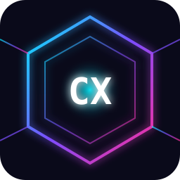

Cortex Intelligent is an MCP server that augments an ordinary LLM with context, procedures, memory, exemplars, verification, and an internal decision engine. Everything runs locally. No API keys. No cloud. No model gateway. The model becomes smarter by following structured guardrails and checking real execution feedback.
Idempotent marker-block append. Never overwrites user content. Backup before write.
Detects model tier (weak/medium/strong) and injects anti-blunder procedures.
Exemplar retrieval, structured self-critique, compliance scoring, verification runner.
Fast deterministic decisions (tier/risk/route/compliance) via heuristics. No LLM.
AI Agent → SKILL.md → AGENTS.md → PLAN.md ↔ CORTEX_EXECUTE ↔ TASK.md ↔ CORTEX_VERIFY → DONE. Persistent task tracking.
Hybrid search (BM25 + vector + RRF), long-term memory with decay.
Copy .env.example to .env and edit. Environment variables always win over the file.
| Variable | Default | Purpose |
|---|---|---|
| CORTEX_DB_DIR | .cortex-data | SQLite store location |
| CORTEX_MODEL | (auto) | Override model |
| CORTEX_TIER_OVERRIDE | (auto) | Override tier |
| CORTEX_VERIFY_ALLOWLIST | npm test,npm run lint,npm run typecheck | Verification commands |
| CORTEX_VERIFY_TIMEOUT_MS | 300000 | Verification timeout |
| CORTEX_SELF_CRITIQUE_THRESHOLD | 0.8 | Revision threshold |
| CORTEX_SELF_CRITIQUE_MAX_ITERS | 3 | Max self-critique iterations |
| CORTEX_PROVISION_BACKUP | 1 | Backup before write |
| CORTEX_GUARDRAILS_STRICT | 1 | Enforce guardrails |
| EMBEDDING_PROVIDER | local | local / transformers |
| EMBEDDING_MODEL | Xenova/all-MiniLM-L6-v2 | Embedding model |
| SEARCH_MODE | hybrid | hybrid / vector / keyword |
| KB_MEMORY_HALF_LIFE_DAYS | 14 | Memory decay half-life |
Add to ~/.config/opencode/opencode.json:
| # | Tool | Purpose |
|---|---|---|
| 1 | system_stats | DB, embedding, counts, verifier status |
| 2 | cognitive_status | Session summary: model, tier, calls, scores, verification, decision |
| 3 | bootstrap_session | Detect root, provision agent+skill, record session state |
| 4 | provision_agent_skill | Provision or append (idempotent, force version) |
| 5 | list_agents_skills | Inventory agent/skill files + auto-block versions |
| 6 | update_procedure_block | Update auto block with new version |
| 7 | detect_model | Detect model from env/config/arg |
| 8 | get_model_profile | Profile & tier of a model |
| 9 | set_model | Override model for session |
| 10 | get_guardrails | Procedure + anti-blunder + verification (injectable) |
| 11 | model_decision | Internal tier/risk/route/needsVerify decision |
| 12 | knowledge_ingest_text | Ingest text |
| 13 | knowledge_ingest_file | Ingest file |
| 14 | knowledge_ingest_dir | Ingest directory |
| 15 | knowledge_search | Hybrid search (BM25 + vector + RRF) |
| 16 | knowledge_retrieve | Ready-to-inject context block + token count |
| 17 | knowledge_list_documents | List documents (paginated) |
| 18 | knowledge_document_stats | Document storage statistics |
| 19 | knowledge_delete_document | Delete document + chunks + FTS |
| 20 | knowledge_sync_session | Ingest OpenCode session inputs |
| 21 | knowledge_reindex | Re-embed all vectors in place |
| 22 | knowledge_backup | Consistent SQLite snapshot (VACUUM INTO) |
| 23 | memory_remember | Save long-term memory |
| 24 | memory_recall | Semantic memory search (decay + recall count) |
| 25 | memory_context | Compact context block from memories |
| 26 | memory_list | List memories (filter type/tag/importance) |
| 27 | memory_get | Get memory by id |
| 28 | memory_update | Update memory content/type/importance/tags |
| 29 | memory_forget | Delete memory |
| 30 | memory_consolidate | Dedupe + promote hot memories |
| 31 | memory_stats | Counts, tokens, importance, by type |
| 32 | self_critique | Checklist + scoring + issues (no LLM) |
| 33 | score_compliance | Check completeness of required steps |
| 34 | run_verification | Run allowlisted test/lint/typecheck |
| 35 | decision_classify | Internal decision (tier/risk/route/compliance) |
| 36 | decision_health | Health of internal decision engine |
| 37 | get_procedure | Get procedure by name |
| 38 | list_procedures | List all procedures |
| 39 | ingest_procedure | Store a new procedure |
| 40 | retrieve_exemplars | Retrieve best exemplars for a task |
| 41 | ingest_exemplar | Store a high-quality exemplar |
| 42 | init_plan | Initialize PLAN.md if missing (idempotent) |
| 43 | read_plan | Read PLAN.md content |
| 44 | update_plan_section | Update a PLAN.md section by heading |
| 45 | init_task | Initialize TASK.md if missing (idempotent) |
| 46 | task_create | Create a new task |
| 47 | task_list | List tasks (filter status/priority) |
| 48 | task_get | Get task by id |
| 49 | task_start | Set task status to doing |
| 50 | task_done | Set task status to done |
| 51 | task_block | Set task status to blocked + reason |
| 52 | task_delete | Delete a task |
| 53 | task_update | Update task title/priority/owner/plan_ref/notes |
| 54 | task_sync_md | Write TASK.md from DB |
| 55 | task_summary | Summary of task statuses |
| 56 | webfetch | Fetch URL (with SSRF guard, timeout, ingest option) |
| 57 | webfetch_validate | Validate URL for webfetch (no fetch) |
bootstrap_session(project_root).model_decision → set session state.get_guardrails(task="session_start").get_guardrails(task_type) → checklist.retrieve_exemplars(task) → best examples.run_verification() → real feedback.score_compliance(plan) + self_critique(artifact).init_plan + init_task.task_list(status="todo") → choose.task_start(id) → doing.task_done(id) after verification passes.task_sync_md() → write TASK.md..opencode/ under project root.Check config filename (opencode.json), location (global: ~/.config/opencode/opencode.json), cwd, and CORTEX_DB_DIR. Restart OpenCode.
tsx compiles TypeScript on first run; subsequent calls are fast. Use compiled dist/ entry.
Only allowlisted commands run. Adjust CORTEX_VERIFY_ALLOWLIST.